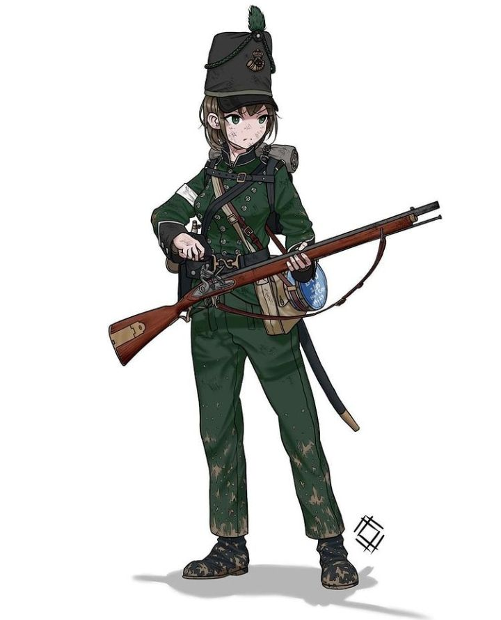

ニガスインパリス
Utama
Tentang
Tutorial
Fakta
_____________________________
British 95th Regiment of Foot
_____________________________

95th (Derbyshire) Regiment of Foot adalah resimen infanteri Angkatan Darat Inggris, yang dibesarkan pada tahun 1823. Di bawah Reformasi Childers, itu digabungkan dengan ke-45 (Nottinghamshire) (Sherwood Foresters) Resimen Kaki untuk membentuk Rimbawan Sherwood pada tahun 1881. Resimen tersebut dibesarkan oleh Jenderal Sir Colin Halkett sebagai Resimen Kaki ke-95, sebagai tanggapan atas ancaman yang ditimbulkan oleh intervensi Prancis di Spanyol, pada 1 Desember 1823. Pesawat ini berangkat ke Malta pada Maret 1824 dan diberi sebutan teritorial sebagai Resimen Kaki ke-95 (Derbyshire) pada bulan Desember 1825. Kemudian berlayar ke Kepulauan Ionia pada bulan Januari 1830, markas besar awalnya didirikan di Corfu tetapi dipindahkan ke Vido pada bulan Desember 1831. Kantor pusat kembali ke Corfu pada Mei 1832, ke Cephalonia pada April 1833 dan kembali ke Corfu pada Juni 1834. Resimen itu berangkat pulang pada bulan Desember 1834.
@copyright by Hagami
English
日本語